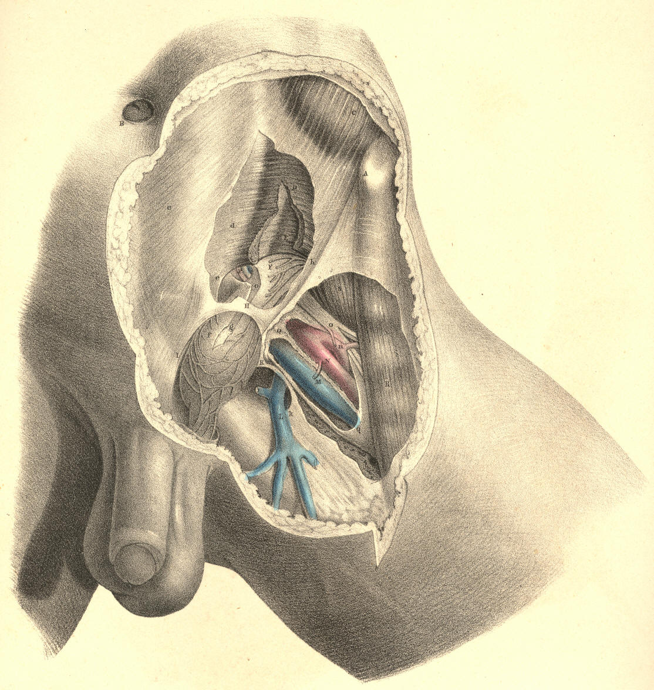

SURGICAL ANATOMY by JOSEPH MACLISE
COMMENTARY ON PLATES 32, 33, & 34.
THE DISSECTION OF THE OBLIQUE OR EXTERNAL AND
THE DIRECT OR INTERNAL INGUINAL HERNIAE.
The order in which the herniary bowel takes its investments from the
eight layers of the inguinal region, is precisely the reverse of that
order in which these layers present in the dissection from before
backwards. The innermost layer of the inguinal region is the
peritonaeum, and from this membrane the intestine, when about to
protrude, derives its first covering. This covering constitutes the
hernial sac. Almost all varieties of inguinal herniae are said to be
enveloped in a sac, or elongation of the peritonaeum. This is accounted
as the general rule. The exceptions to the rule are mentioned as
occurring in the following modes: 1st, the caecum and sigmoid flexure of
the colon, which are devoid of mesenteries, and only partially covered
by the peritonaeum, may slip down behind this membrane, and become
hernial; 2nd, the inguinal part of the peritonaeum may suffer rupture,
and allow the intestine to protrude through the opening. When a hernia
occurs under either of these circumstances, it will be found deprived of
a sac.
All the blood vessels and nerves of the abdomen lie external to the
peritonaeum. Those vessels which traverse the abdomen on their way to
the external organs course outside the peritonaeum; and at the places
where they enter the abdominal parietes, the membrane is reflected from
them. This disposition of the peritonaeum in respect to the spermatic
and iliac vessels is exhibited in Plate 32.
The part of the peritonaeum which lines the inguinal parietes does not
(in the normal state of the adult body) exhibit any aperture
corresponding to that named the internal ring. The membrane is in this
place, as elsewhere, continuous throughout, being extended over the
ring, as also over other localities, where subjacent structures may be
in part wanting. It is in these places, where the membrane happens to be
unsupported, that herniae are most liable to occur. And it must be
added, that the natural form of the internal surface of the groin is
such as to guide the viscera under pressure directly against those parts
which are the weakest.
The inner surface of the groin is divided into two pouches or fossae, by
an intervening crescentic fold of the peritonaeum, which corresponds
with the situation of the epigastric vessels. This fold is formed by the
epigastric vessels and the umbilical ligament, which, being tenser and
shorter than the peritonaeum, thereby cause this membrane to project.
The outer fossa represents a triangular space, the apex of which is
below, at P; the base being formed by the fibres of the transverse
muscle above; the inner side by the epigastric artery; and the outer
side by Poupart's ligament. The apex of this inverted triangle is
opposite the internal ring. The inner fossa is bounded by the epigastric
artery externally; by the margin of the rectus muscle internally; and by
the os pubis and inner end of Poupart's ligament inferiorly. The inner
fossa is opposite the external abdominal ring, and is known as the
triangle of Hesselbach.
The two peritonaeal fossae being named external and internal, in
reference to the situation of the epigastric vessels, we find that the
two varieties of inguinal herniae which occur in these fossae are named
external and internal also, in reference to the same part.
The external inguinal hernia,
so called from its commencing in the outer
peritonaeal fossa, on the outer side of the epigastric artery, takes a
covering from the peritonaeum of this place, and pushes forward into the
internal abdominal ring at the point marked P, Plate 32. In this place,
the incipient hernia or bubonocele, covered by its sac, lies on the
forepart of the spermatic vessels, and becomes invested by those same
coverings which constitute the inguinal canal, through which these
vessels pass. In this stage of the hernia, its situation in respect to
the epigastric artery is truly external, and in respect to the spermatic
vessels, anterior, while the protruded intestine itself is separated
from actual contact with either of these vessels by its proper sac. The
bubonocele, projecting through the internal ring at the situation marked
F, (Plate 33,) midway between A, the anterior iliac spine, and I, the
pubic spine, continues to increase in size; but as its further progress
from behind directly forwards becomes arrested by the tense resisting
aponeurosis of the external oblique muscle, h, it changes its course
obliquely inwards along the canal, traversing this canal with the
spermatic vessels, which still lie behind it, and, lastly, makes its
exit at the external ring, H. The obliquity of this course, pursued by
the hernia, from the internal to the external ring, has gained for it
the name of oblique hernia.
In this stage of the hernial protrusion, the
only part of it which may be truly named external is the neck of its
sac, F, for the elongated body, G, of the hernia lies now actually in
front of the epigastric artery, P, and this vessel is separated from the
anterior wall of the canal, H h,
by an interval equal to the bulk of the
hernia. While the hernia occupies the canal, F H, without projecting
through the external ring, H, it is named "incomplete." When it has
passed the external ring, H, so as to form a tumour of the size and in
the situation of f g, it is
named "complete." When, lastly, the hernia
has extended itself so far as to occupy the whole length of the cord,
and reach the scrotum, it is termed "scrotal hernia." These names, it
will be seen, are given only to characterise the several stages of the
one kind of hernia--viz., that which commences to form at a situation
external to the epigastric artery, and, after following the course of
the spermatic vessels through the inguinal canal, at length terminates
in the scrotum.
The external inguinal hernia having entered the canal, P, (Plate 32,) at
a situation immediately in front of the spermatic vessels, continues, in
the several stages of its descent, to hold the same relation to these
vessels through the whole length of the canal, even as far as the
testicle in the scrotum. This hernia, however, when of long standing and
large size, is known to separate the spermatic vessels from each other
in such a way, that some are found to lie on its fore part--others to
its outer side. However great may be the size of this hernia, even when
it becomes scrotal, still the testicle is invariably found below it.
This fact is accounted for by the circumstance, that the lower end of
the spermatic envelopes is attached so firmly to the coats of the
testicle as to prevent the hernia from either distending and elongating
them to a level below this organ, or from entering the cavity of the
tunica vaginalis.
The external form of inguinal hernia is, comparatively speaking, but
rarely seen in the female. When it does occur in this sex, its position,
investments, and course through the inguinal canal, where it accompanies
the round ligament of the uterus, are the same as in the male. When the
hernia escapes through the external abdominal ring of the female groin,
it is found to lodge in the labium pudendi. In the male body, the
testicle and spermatic cord, which have carried before them investments
derived from all the layers of the inguinal region, have, as it were,
already marked out the track to be followed by the hernia, and prepared
for it its several coverings. The muscular parietes of the male inguinal
region, from which the loose cremaster muscle has been derived, have by
this circumstance become weakened, and hence the more frequent
occurrence of external inguinal hernia in the male. But in the female,
where no such process has taken place, and where a cremaster does not
exist at the expense of the internal oblique and transverse muscles, the
inguinal parietes remain more compact, and are less liable to suffer
distention in the course of the uterine ligament.
The internal inguinal hernia
takes its peritonaeal covering (the sac)
from the inner fossa, Q R, Plate 32, internal to the epigastric artery,
and forces directly forwards through the external abdominal ring,
carrying investments from each of such structures as it meets with in
this locality of the groin. As the external ring, H, Plate 34, is
opposite the inner peritonaeal fossa, Q R, Plate 32, this hernia, which
protrudes thus immediately from behind forwards, is also named direct.
In this way these two varieties of hernia, (the external, Plate 33, and
the internal, Plate 34,) though commencing in different situations, P
and R, Plate 32, within the abdomen, arrive at the same place--viz., the
external ring, H, Plates 33 and 34. The coverings of the internal
hernia, Plate 34, though not derived exactly from the same locality as
those which invest the cord and the external variety, are, nevertheless,
but different parts of the same structures; these are, 1st, the
peritonaeum, G, which forms its sac; 2nd, the pubic part of the fascia
transversalis; 3rd, the conjoined tendon itself, or (according as the
hernia may occur further from the mesial line) the cremaster, which, in
common with the internal oblique and transverse muscles, terminates in
this tendon; 4th, the external spermatic fascia, derived from the
margins of the external ring; 5th, the superficial fascia and
integuments.
The coverings of the internal inguinal hernia are (as to number)
variously described by authors. Thus with respect to the conjoined
tendon, the hernia is said, in some instances, to take an investment of
this structure; in others, to pass through a cleft in its fibres; in
others, to escape by its outer margin. Again, the cremaster muscle is
stated by some to cover this hernia; by others, to be rarely met with,
as forming one of its coverings; and by others, never. Lastly, it is
doubted by some whether this hernia is even covered by a protrusion of
the fascia transversalis in all instances. [Footnote]
[Footnote: Mr. Lawrence (Treatise on Ruptures) remarks, "How often it
may be invested by a protrusion of the fascia transversalis, I cannot
hitherto determine." Mr. Stanley has presented to St. Bartholomew's
Hospital several specimens of this hernia invested by the fascia.
Hesselbach speaks of the fascia as being always present. Cloquet
mentions it as being present always, except in such cases as where, by
being ruptured, the sac protrudes through it. Langenbeck states that the
fascia is constantly protruded as a covering to this hernia: "Quia
hernia inguinalis interna non in canalis abdominalis aperturam internam
transit, tunicam vaginalem communem intrare nequit; parietem autem
canalis abdominalis internum aponeuroticum, in quo fovea inguinalis
interna, et qui ex adverso annulo abdominali est, ante se per annulum
trudit." (Comment, ad illust. Herniarum, &c.) Perhaps the readiest
and
surest explanation which can be given to these differences of opinion
may be had from the following remark:--"Culter enim semper has partes
extricat, quae involucro adeo inhaerent, ut pro lubitu musculum
(membranam) efformare queas unde magnam illam inter anatomicos
discrepantiam ortam conjicio." (Camper. Icones Herniarum.)]
The variety in the number of investments of the internal inguinal hernia
(especially as regards the presence or absence of the conjoined tendon
and cremaster) appears to me to be dependent, 1st, upon the position
whereat this hernia occurs; 2nd, upon the state of the parts through
which it passes; and 3rd, upon the manner in which the dissection
happens to be conducted.
The precise relations which the internal hernia holds in respect to the
epigastric and spermatic vessels are also mainly dependent (as in the
external variety) upon the situation where it traverses the groin. The
epigastric artery courses outside the neck of its sac, sometimes in
close connexion with this part--at other times, at some distance from
it, according as the neck may happen to be wide and near the vessel, or
narrow, and removed from it nearer to the median line. At the external
ring, H, (Plate 34,) the sac of this hernia, g, protrudes on the inner
side of the spermatic vessels, f;
and the size of the hernia distending
the ring, removes these vessels at a considerable interval from, I, the
crista pubis. At the ring, H, (Plate 34,) the investments, g f, of the
direct hernia are not always
distinct from those of the oblique hernia,
g f, (Plate 33); for whilst in
both varieties the intestine and the
spermatic vessels are separated from actual contact by the sac, yet it
is true that the direct hernia, as well as the oblique, may occupy the
inguinal canal. It is in relation to the epigastric artery alone that
the direct hernia differs essentially from the oblique variety; for I
find that both may be enclosed in the same structures as invest the
spermatic vessels.
The external ring of the male groin is larger than that of the female;
and this circumstance, with others of a like nature, may account for the
fact, that the female is very rarely the subject of the direct hernia.
In the male, the direct hernia is found to occur much less frequently
than the oblique, and this we might, a
priori, expect, from the
anatomical disposition of the parts. But it is true, nevertheless, that
the part where the direct hernia occurs is not defended so completely in
some male bodies as it is in others. The conjoined tendon, which is
described as shielding the external ring, is in some cases very weak,
and in others so narrow, as to offer but little support to this part of
the groin.
DESCRIPTION OF THE FIGURES OF PLATES 32, 33, & 34.
PLATE 32.
A. That part of the ilium which abuts against the sacrum.
B. The spine of the ischium.
C. The tuberosity of the ischium.
D. The symphysis pubis.
E. Situation of the anterior superior iliac spine.
F. Crest of the ilium.
G. Iliacus muscle.
H. Psoas magnus muscle supporting the spermatic vessels.
I. Transversalis muscle.
K. Termination of the sheath of the rectus muscle.
L1 L2 L3. The iliac, transverse and pelvic portions of the transversalis
fascia.
M M. The peritonaeum lining the groin.
N. The epigastric vessels lying between the peritonaeum, M, and the
transversalis fascia, L2. O. The umbilical ligament.
P. The neck of the sac of an external inguinal hernia formed before the
spermatic vessels.
Q. An interval which occasionally occurs between the umbilical ligament
and the epigastric artery.
R and Q. Situations where the direct inguinal hernia occurs when, as in
this case, the
umbilical ligament crosses the space named the
internal fossa--the triangle of Hesselbach.
S. Lower part of the right spermatic cord.
T. The bulb of the urethra.
U. External iliac vein covered by the peritonaeum.
V. External iliac artery covered by the peritonaeum.
W. Internal iliac artery.
X. Common iliac artery.
Plate 32
PLATE 33.--The External Inguinal
Hernia.
A. Anterior iliac spinous process.
B. The umbilicus.
C. Fleshy part of the external oblique muscle; c, its tendon.
D. Fleshy part of the internal oblique muscle; d, its tendon.
E. Transversalis muscle; e,
the conjoined tendon.
F f. The funnel-shaped sheath
of the spermatic vessels covering the
external hernia; upon it are seen the
cremasteric fibres.
G g. The peritonaeal covering
or sac of the external hernia within the
sheath.
H. The external abdominal ring.
I. The crista pubis.
K k. The saphenous opening.
L. The saphena vein.
M. The femoral vein.
N. The femoral artery; n, its
profunda branch.
O. The anterior crural nerve.
P. The epigastric vessels overlaid by the neck of the hernia.
Q Q. The sheath of the femoral vessels.
R. The sartorius muscle.
S. The iliacus muscle.

Plate 33
PLATE 34.--The Internal Inguinal
Hernia.
The letters indicate the same parts as in Plate 33

Plate 34
COMMENTARY ON PLATES 35,
36, 37, & 38